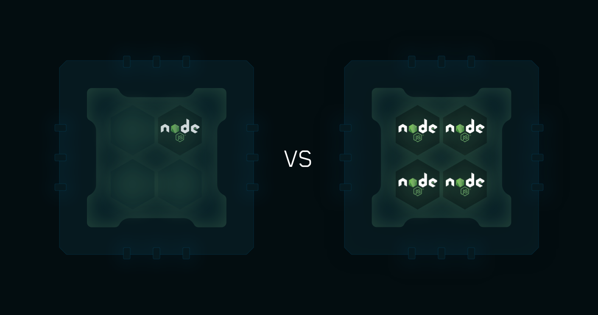

P（rocess）M（anager）2 Runtime 是具有内置 Load Balancer 的 Node.js 应用程序的项目进程管理器。它允许永久保持应用程序的在线，无需停机即可重新加载它们，并可以完成常见的 Devops 任务。
安装使用
使用 npm 安装全局指令：
1 | $ npm i pm2 -g |
系统启动或重启时自动启动/禁用自启动：
1 | $ pm2 startup/unstartup |
启动应用，指定名称，设置集群 Node 数量，检测文件变化时自动重启，忽略检测文件，指定脚本参数：
1 | $ pm2 start npm -i max --name="doc-manager" --watch --ignore-watch="node_modules" -- run start |
进程管理
-
查看进程列表：
pm2 list -
启动进程：
pm2 start -
停止进程：
pm2 stop -
删除进程：
pm2 delete -
重启进程：
pm2 restart- 修改环境变量，重启更新配置
1
$ NODE_ENV=production pm2 restart app --update-env
-
重新加载进程：
pm2 reload -
查看日志：
pm2 logs— error 只输出错误 —lines n 输出最后的多少行- 清空日志：
pm2 flush
- 清空日志：
-
查看当前进程环境变量：
pm2 env <pm_id> -
查看监控：
pm2 monitor -
保存当前列表到硬盘：
pm2 save -
恢复上一次保存的列表：
pm2 resurrect
集群模式

内置的负载均衡器提供联网的 Node.js 应用程序（http(s)/ tcp / udp服务器），可以在所有可用的 CPU 上进行扩展，无需任何代码修改。
要启用集群模式，只需传递 -i
1 | pm2 start app.js -i max |
max 代表 cpu 最大可用数，也可以使用负数来移除 Node 服务数量。
静态文件服务
pm2 也可以作为静态文件的服务来使用：
1 | pm2 serve <path> <port> |
默认使用当前文件夹和 8080 端口。
pm2 也可以使用配置文件的形式；通过 SSH使用自动化代理部署，具体请查看官方文档；
命令行的所有指令可以在这查看：CLI